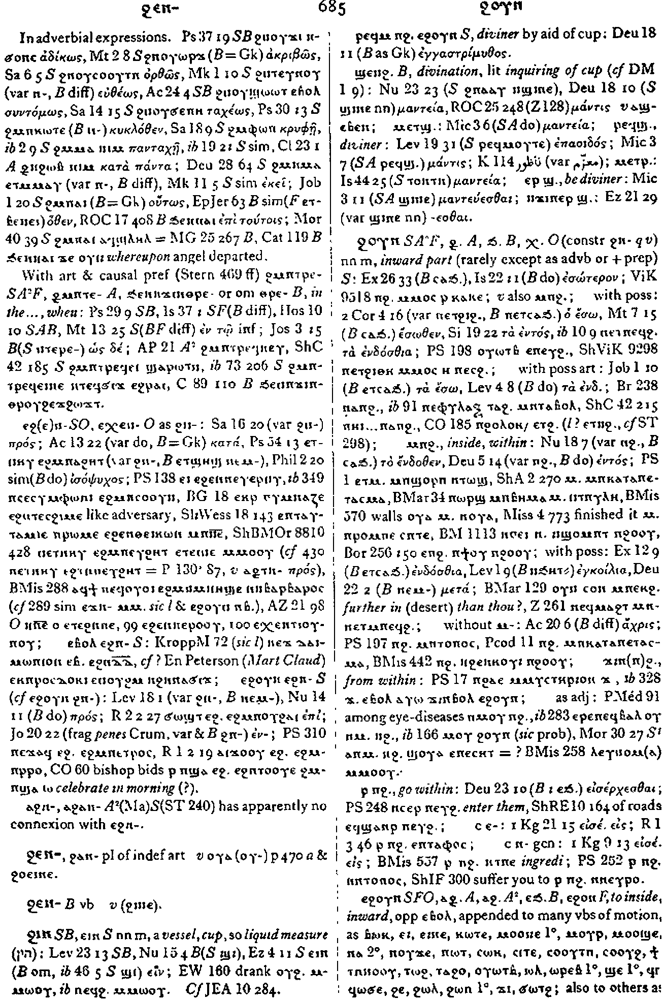

(noun male)
inward part (rarely except as advb or + prep) [εσωτερον]
(S, sA, F)
ϩⲟⲩⲛ
(A) ⳉⲟⲩⲛ
(B) ϧⲟⲩⲛ
(O) ⲭⲟⲩⲛ
(A) ⳉⲟⲩⲛ
(B) ϧⲟⲩⲛ
(O) ⲭⲟⲩⲛ
| ⲙⲡϩ. | inside, within7837 | Crum: 685b | |||||||
| ϫⲓⲛϩ., ϫⲓⲛⲛϩ. | from within3483 | ||||||||
| ⲣ ⲡϩ. | go within [εισερχεσθαι]3484 | ||||||||
| ⲉ- (c) | 7838 | ||||||||
| ⲛ- {gen} (c) | 7839 | ||||||||
| (S, F, O)
ⲉϩⲟⲩⲛ
(A) ⲁⳉⲟⲩⲛ (sA) ⲁϩⲟⲩⲛ (B) ⲉϧⲟⲩⲛ (F) ⲉϩⲟⲛ |
to inside, inward, opp ⲉⲃⲟⲗ , appended to many vbs of motion3485 | ||||||||
| often reinforcing following prep7840 | Crum: 686a | ||||||||
| ⲉ- (c) | 7841 | ||||||||
| ⲉϩⲣⲛ- (c) | 7842 | ||||||||
| ⲉϫⲛ- (c) | 7843 | ||||||||
| (S) ⲛ- {dat} (c) | 7844 | ||||||||
| (S) ⲛⲁϩⲣⲛ- (c) | 7845 | ||||||||
| (S) ϣⲁ- (c) | 7846 | ||||||||
| ϩⲁ-, ϧⲁ- (c) | 7847 | ||||||||
| (S, A, sA, B, F) ⲛϩ. | within [εσω]
as nn m S, inward parts3486 |
||||||||
| With prep:7848 | Crum: 686b | ||||||||
| ⲉ- (c) | 7849 | ||||||||
| ⲛ- (c) | 7850 | ||||||||
| ϩⲁ- (c) | 7851 | ||||||||
| (S) ϩⲓ- (c) | 7852 | ||||||||
| (S) ϩⲛ- (c) | 7853 | ||||||||
| (S) ϩⲁϩⲧⲛ- (c) | 7854 | ||||||||
| (S)
ⲥⲁϩ.
(B) ⲥⲁϧ. |
as ⲛϩ. [εσω]3487 | ||||||||
| With prep:7855 | |||||||||
| ⲉ- (c) | 7856 | ||||||||
| ⲛ- (c) | 7857 | ||||||||
| ⲣ ⲥ., ⲉⲣ ⲥ. | be within3488 | ||||||||
| (S, A, sA, F) ⲥⲁ ⲛϩ. (ⲡ) | (noun male)
inner part [εσω]3489 |
||||||||
| ⲛ- (c) | 7858 | Crum: 687a | |||||||
| (S, A, sA)
ϣⲁϩ.
(S, F) ϣⲁⲉϩ. (B) ϣⲁⲉϧ. |
towards inner part, inward3490 | ||||||||
| ⲉ- (c) | until7859 | ||||||||
| ⲉⲣⲁⲧ= (c) | 7860 | ||||||||
| (S, sA) ϩⲓϩ. | within3491 | ||||||||
| ⲛ- (c) | 7861 | ||||||||
| ϩⲓⲛϩ. | 7862 | ||||||||
| (S) ⲣⲙⲛϩ. | an ecclesiastical (?) official3492 | ||||||||
See also:
| view | (S, sA, F, O) ϩⲛ- (A) ⳉⲛ- (B) ϧⲉⲛ- (F) ϩⲓⲛ-, ϩⲉ-, ϩⲏ- (F, O) ϩⲉⲛ- (O) ϧⲛ- (S, sA, F) ⲛϩⲏⲧ= (A) ⲛⳉⲏⲧ= (B) ⲛϧⲏⲧ= | (preposition) of place in,
at, on
of time by, with as agent372 |
| view | (S, O) ϩⲏ (A) ⳉⲉⲓ, ⳉⲓ (S, sA) ϩⲏⲧ= (A) ⳉⲏⲧ= (B) ϧⲏⲧ= (O) ⲭⲏ= | (noun female) (B mostly ⲛⲉϫⲓ) belly, also womb [κοιλια, γαστηρ]2103 |
Crum: 685,686,687

685

686

687
Dawoud: 642b

642